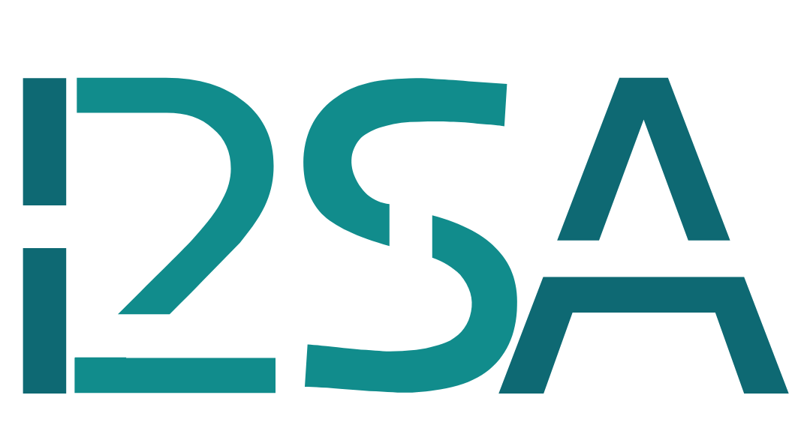
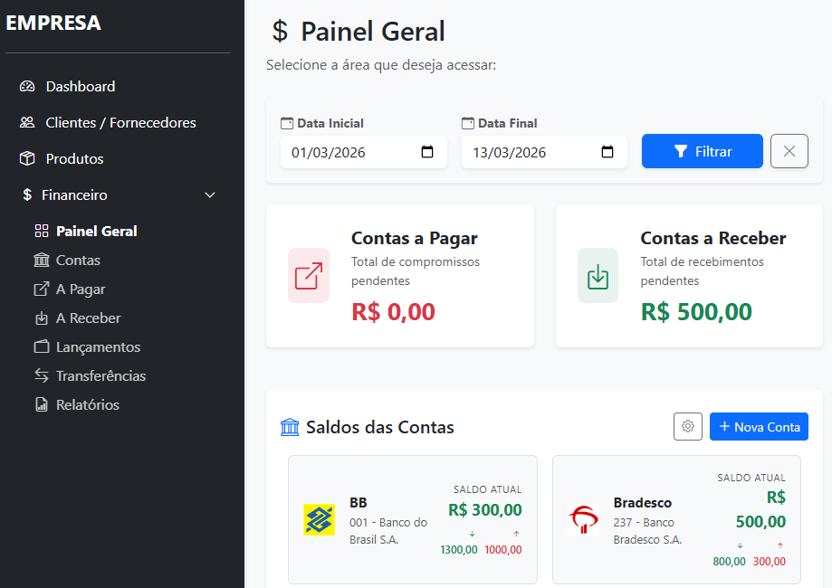

Quem sou
Engenheiro Sênior & Arquiteto de IA
Engenheiro Químico formado pela UFPR, com Mestrado em Engenharia Química pela UFSC. Ao longo de mais de duas décadas, construí uma carreira transversal abrangendo gestão de laboratório, P&D e sistemas da qualidade — sempre com foco em resultados mensuráveis e excelência operacional.
Foco Principal Atual: Arquitetar Agentes de IA, orquestrar pipelines de LLMs (RAG) e implementar fluxos de trabalho de MLOps. Combino o rigor técnico da engenharia tradicional com modernas ferramentas de ciência de dados e automação — Python, infraestrutura em nuvem e aprendizado de máquina — para entregar soluções escaláveis e prontas para produção.
Atuo como assessor independente e sou o criador do Método RSA (Reorganiza, Simplifica e Automatiza), ajudando profissionais autônomos e empresas a eliminarem tarefas manuais repetitivas através da implementação de soluções tecnológicas modernas e Agentes de IA para organizar processos e gerar resultados mensuráveis.
Autor do Método RSA

O Método
Uma abordagem estruturada para converter o caos operacional em processos escaláveis e automatizados. O Método Reorganiza, Simplifica e Automatiza elimina o trabalho manual repetitivo aplicando fluxos de trabalho ágeis e Sistemas Agênticos de IA — sempre com foco na soberania dos dados. Dê o próximo passo na transformação digital da sua empresa.
Saiba como o RSA pode te ajudarProjetos
Sistema de Gestão — ERP
Em produçãoSistema de gestão interna desenvolvido para uma empresa em Jaraguá do Sul, Brasil. Projetado para gerenciar o controle de pedidos, cadastro de clientes e fornecedores, e gestão financeira.

Tecnologias utilizadas:
- Backend: Django (Python)
- Frontend: HTML, CSS, JavaScript, Bootstrap 5
- Banco de dados: SQLite (dev) / PostgreSQL (produção)
- Infraestrutura: Ubuntu VPS, Nginx, Gunicorn, SSL Let's Encrypt
Repositório
Central Market Agent
Agentes de IA / RAGUm agente autônomo RAG (Retrieval-Augmented Generation) projetado para recuperação de conhecimento corporativo, construído com LangChain e Ollama.
Acessar projetoL-System
Um projeto construído para estimular a aprendizagem de STEAM
através da Aprendizagem Baseada em Projetos (PBL).
STEAM = Science + Technology + Engineering + Arts + Mathematics
O objetivo é auxiliar os jovens a desenvolverem uma perspectiva científica e encorajar a investigação
da natureza através da programação.
Código Natural | Substack
Para quem acredita que aprender fazendo é a única forma de aprender de verdade. Projetos práticos de STEAM — para os curiosos, educadores e criadores que querem mais do que consumir conteúdo.
Escrevo periodicamente neste Substack sobre projetos educativos e técnicos.
 Acessar
publicação
Acessar
publicação